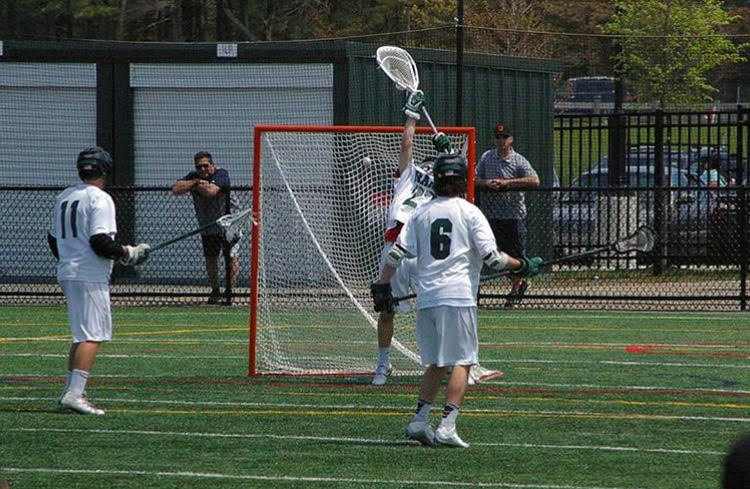

I enjoy doing a lot of things especially thanks to the town I live in. We had a Division 1 lacrosse team where I was the starting goalie my senior year. I ran track and cross country throughout high school as well. I participated in DECA, a business club where me and a partner competed against other high schools giving our best solution to a problem presented in a case scenario before judges. Through DECA, I went to Vero Beach, Florida for a community service trip and Boston for state level competition. Over the summer I went on church mission trips with my friends. The first year, I went to Atlantic City New Jersey to help rebuild houses that were affected by Hurricane Sandy. The year after, I went to Yakima, Washington to help work on a farm that gave food to it's community. Click here to return to the homepage!
